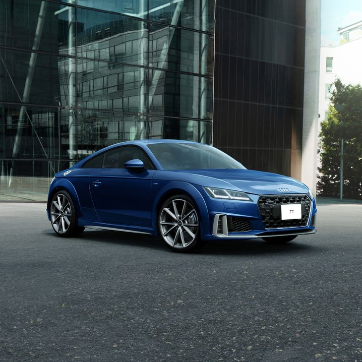
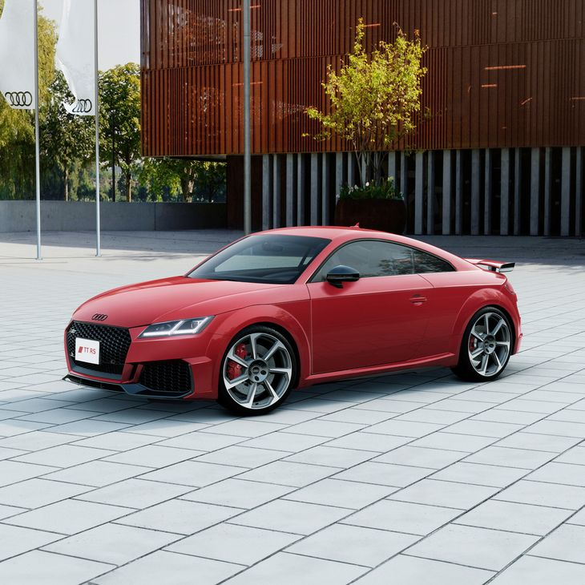

目前所在位置 > TT
TT Coupé
自 1995 年首款概念車型問世，Audi TT Coupé 對汽車工業設計所帶來的深遠衝擊，令其他車款難以望其項背，至今仍普遍被奉為當代典範。
從初代量產車型推出後歷經 20 年，全新第 3 代將經典設計再度精鍊後，正式降臨。您仍然一眼就能辨識出這是輛 Audi TT Coupé，但比原版更加銳利，也更具當代感。The Audi TT Coupé 的誕生，為世人完美揭示了何謂『重塑當代經典』。
‹

›TT RS Coupé
以TT系列令人著迷的優雅姿態、登峰造極的強勁性能，以及極致穩定的動態操駕表現，散發狂野魅力：The new Audi TT RS Coupé 勁化登場。
性能，即是一種態度。感受源自賽道，Audi Sport 車系所帶來的熱血基因。
TT RS Coupé的外觀設計更具侵略性，車身線條更加銳利，充滿運動感。
內飾採用高品質的材料和先進的科技設備，確保駕駛者和乘客都能享受到舒適和便捷。
奧迪TT RS Coupé配備了最先進的駕駛輔助系統和安全功能，確保每一次駕駛都能安心無憂。
‹

›